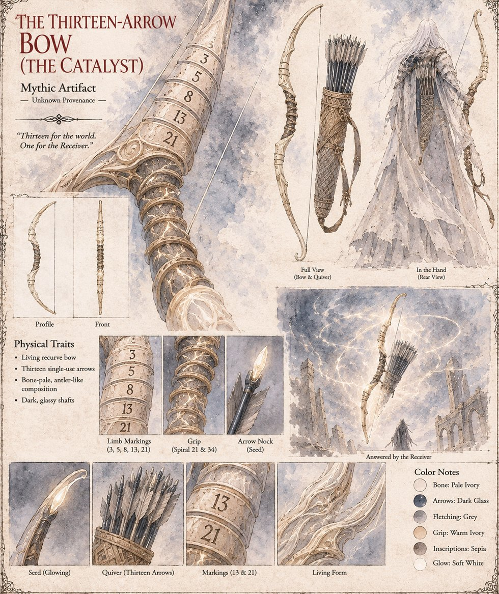

The Thirteen-Arrow Bow
A grown, living bow and its thirteen single-use arrows · the Catalyst of Case 0233 · Mythic Class
A little longer than a tall woman’s arm, a single unbroken recurve of some pale substance that is not wood and is not horn, laminated along each limb in visible bands like the section of a cut antler. It is warm, with the slow, patient warmth of a dog asleep in the sun, and its grip is wrapped in a smooth, faintly ridged tissue that answers the pressure of a palm with a pulse that is not the holder’s. It weighs nothing at all until it is drawn, and then precisely as much as the archer can manage and not a grain more. With it comes a quiver of woven reed and thirteen arrows, each of a dark, glassy, faintly translucent shaft, fletched with three grey vanes that are not feathers, and each set at the nock with a seed of milky crystal that glows, very softly, whenever the bow is near. The bands on the upper limb run three at the tip, then five, eight, thirteen, and twenty-one at the shoulder; Ketevan notes that each is the sum of the two before it and that none of them is a number that grows in an animal by accident. The Custodian’s log adds that its grip is ridged in spirals of twenty-one and thirty-four, present so that a sufficiently rigorous investigator might infer non-natural origin unassisted.
It does nothing by itself. Observer 506, who climbs the Ormeli road as a thin, lame fletcher who wants bread and gives his name as Besarion, leaves it with the Warden who feeds him, with no instruction beyond a guest’s courtesy, keep it until someone asks; and her nine-year-old daughter takes it down from the shelf, fits the arrow nearest her hand and asks for a little rain. Nestan shuts her eyes, as one does with a wish, the seed brightens, flares once like a struck match at the top of the flight and goes out; an answered arrow goes dark, and the thing can be asked once. Behind it an unseen Receiver in the sky returns the weather that the picture, taken literally, requires, and settles the difference against the nearest air that no live request has claimed. Twelve arrows, four to a god, go to the Concordat of the Quiver; the thirteenth, dead, goes to Ketevan in a velvet casket. Ten are loosed in all, the child’s first, and three are burned unfired in a forge at Kharzeni, and the Log’s count of the dead runs to 7,360 direct and 156,360 in all. After Mirdat’s death the bow lies in the Hall of the Unstrung Bow, cool upon its slab, and nobody ever strings it again; the pilgrims who come shoot plain arrows into the sky above the court with a hand on its cold grip, and the histories rename it the Sky-Bow of the Four Crowns, then the Horn of the One Heaven, and in a poem of the fourth century a rainbow.
The manuscript gives the bow’s size, its pale laminated recurve, its warmth, its pulse, the quiver of reed, the dark glassy shafts, the grey vanes, the seeds, the bands of 3, 5, 8, 13 and 21 and the grip’s spirals of 21 and 34. The sheet’s bone-pale, antler-like composition, warm-ivory grip, sepia numerals and soft white glow are its own, as are its panels Limb Markings, Grip, Arrow Nock (Seed), Quiver (Thirteen Arrows) and Living Form and its two scenes, In the Hand (Rear View), which gives a pale robed figure with long white hair, and Answered by the Receiver, which rings the bow in light above a ruin. The sheet gives its provenance as unknown. The line it prints, Thirteen for the world. One for the Receiver., is not in the manuscript, whose quiver holds thirteen in all.